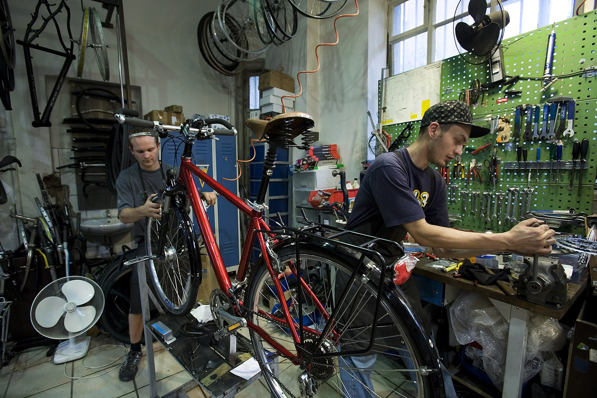
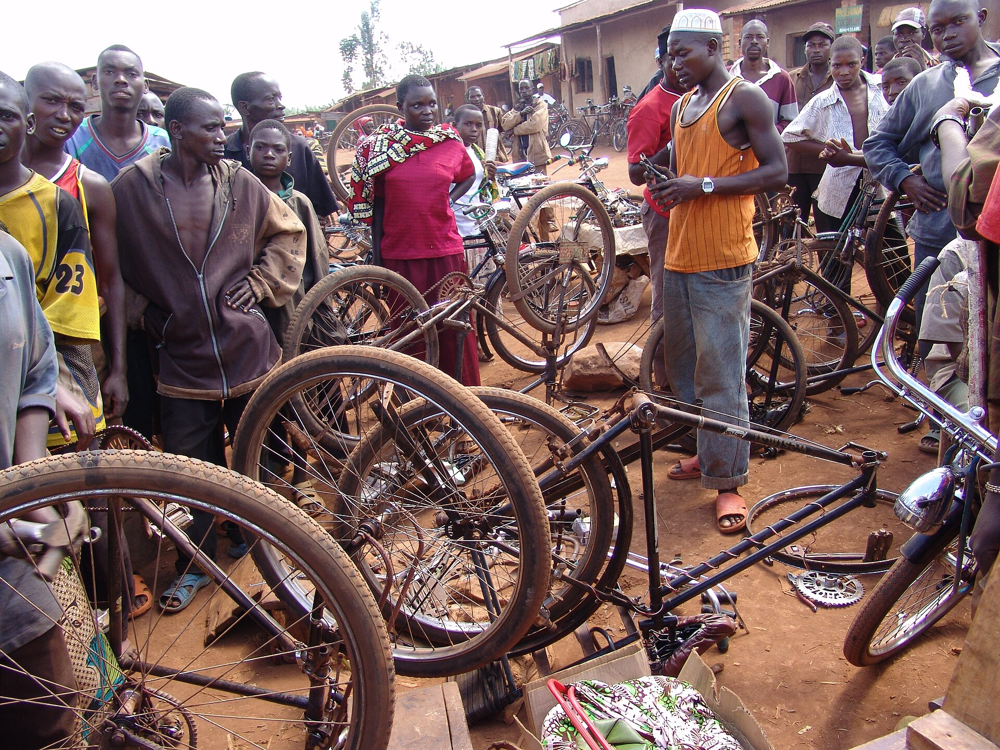

Bike repairs under the arches
Bike repairs. Same day if you're in early.
Punctures, gears, brakes, full services. Walk in, no booking. Call 07700 900342.
Call 07700 900342Why choose Spoke & Chain
Walk in, same day
No booking. Most jobs done while you wait or by the end of the day. Full services in 48 hours.
Open Tue to Sat, 9 to 6
Closed Sunday and Monday. Arch 14, Brunel Yard, Deptford SE8 4LE. Two minutes from Deptford station.
Honest prices
Price list on the wall and on this site. No surprises on the bill.

The workshop
Two benches, a wall of wheels and a parts bin that goes back years. Most repairs happen while you wait, and you're welcome to stand and watch.